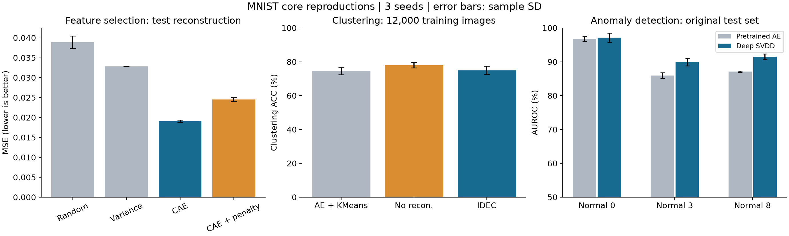
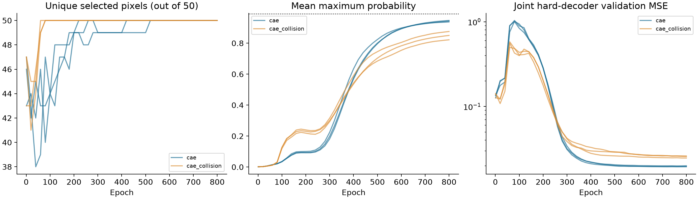
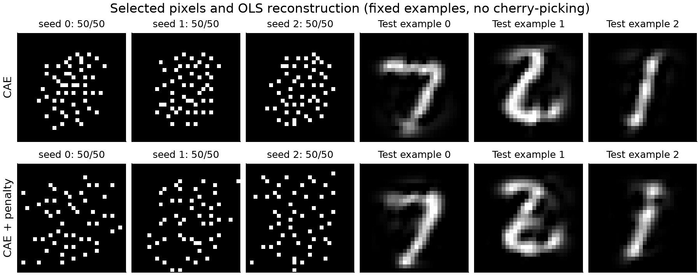
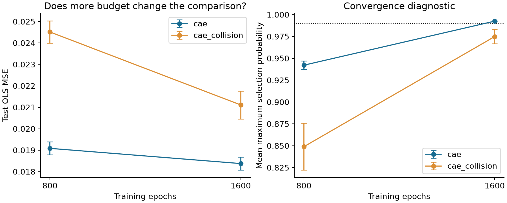

COSI 126A 论文选题与复现实验
2026-11-15 · 五篇论文调研，三篇核心方法实跑 · 本地 RTX 5080 · seeds 0, 1, 2
这是选题阶段的复现与研究判断。作业最终需要选一篇作为主线，完成假设、修改、多条件实验、报告和讲稿。当前结果使用明示的缩减协议，不等于重现原论文全部表格。
三组实验的实际结果

Concrete Autoencoders
| 方法 | 测试 MSE ↓ | 分类准确率 ↑ | 不同像素数 /50 |
|---|
| random | 0.0389 ± 0.0016 | 77.68 ± 1.97% | 50.00 ± 0.00 |
| variance | 0.0329 ± 0.0000 | 86.09 ± 0.22% | 50.00 ± 0.00 |
| cae | 0.0191 ± 0.0003 | 93.40 ± 0.13% | 50.00 ± 0.00 |
| cae_collision | 0.0245 ± 0.0005 | 91.09 ± 0.23% | 50.00 ± 0.00 |
50 个选择槽位，12,000 训练样本，3,000 验证样本；原始 10,000 测试样本保持独立。训练阶段不使用标签。MSE 来自选择特征后重新拟合的 OLS；分类来自固定 50 棵树的 ExtraTrees 下游评估。所有选择器采用同一评估协议。
去重惩罚相对基线的逐种子 MSE 差为 +0.004551, +0.005560, +0.006177；正数表示更差。CAE 达到论文平均最大选择概率 0.99 标准的运行数为 0/3，修改版为 0/3。固定 800 epoch 的结果须结合这一收敛诊断解释。


跨种子所选像素集合的平均 Jaccard：CAE 0.0995 ± 0.0324；修改版 0.0565 ± 0.0171。三个两两比较并非独立重复，不能作为显著性检验。
探索性诊断：用训练数据的绝对 Pearson 相关系数，对两次运行的 50 个像素做最优一对一匹配，平均相关为 CAE 0.7014 ± 0.0264、修改版 0.5623 ± 0.0030。低坐标重合率不自动等于低信息稳定性；相关像素可能相互替代。这不是预注册的主要指标，也不构成因果证明。
追加实验：双方同时增加训练预算
| Epochs | 方法 | 测试 MSE ↓ | 平均最大选择概率 | 达到 0.99 的 seeds |
|---|
| 800 | cae | 0.0191 ± 0.0003 | 0.9422 ± 0.0048 | 0/3 |
| 800 | cae_collision | 0.0245 ± 0.0005 | 0.8489 ± 0.0268 | 0/3 |
| 1600 | cae | 0.0184 ± 0.0003 | 0.9926 ± 0.0003 | 3/3 |
| 1600 | cae_collision | 0.0211 ± 0.0007 | 0.9749 ± 0.0081 | 0/3 |
追加实验在观察到 800 epoch 未收敛后提出，1600 epoch 从头训练，所有其余条件固定。1600 epoch 的逐种子惩罚减基线 MSE 差：+0.002303, +0.003520, +0.002382。两种预算均完整报告，未按测试结果挑选终点。此对照仍不能区分所有正则强度、困难重复特征条件或更长预算。

IDEC
| 方法 | 聚类 ACC ↑ | NMI ↑ | ARI ↑ |
|---|
| ae_kmeans | 74.53 ± 2.08% | 0.6518 ± 0.0102 | 0.5675 ± 0.0266 |
| dec_ablation | 78.00 ± 1.61% | 0.6854 ± 0.0114 | 0.6373 ± 0.0167 |
| idec | 74.94 ± 2.41% | 0.6699 ± 0.0137 | 0.5736 ± 0.0293 |
此表为 12,000 个训练点上的聚类指标，按 Hungarian 匹配计算 ACC。采用作者网络和 uint8/50 缩放，但使用 100 epoch 普通 AE 预训练，取代论文逐层去噪预训练。原论文使用 70,000 点。三个 IDEC 运行全部达到 4,000 步上限，未满足标签变化停止条件；不能据此否定原论文结论。No-reconstruction 是同初始化、同损失系数的受控消融，不代表完整 DEC 官方训练配置。独立测试点的描述性聚类结果保存在各 run 的 heldout 字段，未用于调参。
Deep SVDD
| 正常类别 | Deep SVDD AUROC | 预训练 AE AUROC | 原论文 One-Class AUROC |
|---|
| 0 | 97.15 ± 1.34% | 96.76 ± 0.73% | 98.0 ± 0.7% |
| 3 | 89.91 ± 1.12% | 85.90 ± 0.85% | 91.9 ± 1.5% |
| 8 | 91.50 ± 0.82% | 87.09 ± 0.23% | 93.9 ± 1.6% |
每个正常类别使用完整原始训练子集，每次测试全部 10,000 样本。作者 PyTorch 网络逐值校验通过。150 epoch AE 预训练，再做 150 epoch one-class 优化；原论文使用不同学习率阶段长度、激活斜率与 10 seeds。原论文数字用于参照，不作完全相同条件下的比较。AE 列来自预训练终点，训练预算少于 SVDD 全流程，属于流程诊断。
如何据此选择
建议优先选择 Concrete Autoencoders：低成本的多种子实验、明确的离散选择行为和直观像素图，适合把研究问题聚焦到“预算、重复/相关特征与泛化”的关系。Deep SVDD 适合异常检测方向；IDEC 则适合在既有聚类知识上继续深入。
详细的五篇论文比较、候选假设、实现差异与下一阶段实验设计见仓库 README。原始均值、样本标准差、逐种子记录和独立复算结果分别见 summary.json、runs.csv 和 validation.json。
主要来源